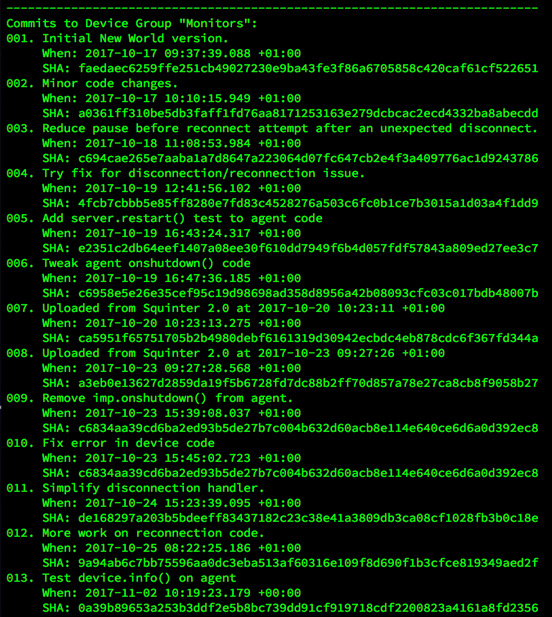

Squinter 2.3
‘A Squirrel Integrator’
Latest Release: 2.3.128 (x March 2019)
Squinter 1.0 is non-operational — Electric Imp has withdrawn the Build API. Please upgrade
to version 2.0 or above to continue using Squinter
Download Squinter
Please verify the integrity of the download with the SHA-1 or SHA-256 checksums.
| File | Squinter_2_3_128.dmg |
|---|---|
| File Size | 10.5MB |
| SHA | d6e9877a04ba312af950596c03661e465dbb89d8 |
| SHA 256 | e757852ab494937088c559d48d1df1ee7ae07375a40ce5944a789ece70563e8b |
About Squinter
Squinter is a utility to help you work on Electric Imp software development projects using your own editor and code files you keep in a local folder — which may also be synchronized with a cloud service like Dropbox or a version control system like GitHub.

With Squinter and Electric Imp's impCentral™ API you can:
- Work on your Electric Imp project code in your favourite text editor
- ‘Compile’ in local library and other files before uploading the complete code to the Electric Imp impCloud™
- You can take charge of your devices:
- Assign them to application firmware (via device groups)
- Update their code
- Reboot devices to run newly uploaded code
- View device logs
- Work with code in a source control system
- And much more...
How To Use Squinter
Contents
- Electric Imp Accounts
- Working With Source Code Files
- Working With Projects and Products
- Working With Device Groups
- Working With Devices
- Incorporating Libraries And Files In Your Code
- Deploying Code
- Debugging Code
- Configuring Squinter
- Updating Squinter
Electric Imp Accounts
Squinter requires an Electric Imp account. Sign up is free at impcentral.electricimp.com. Production functionality requires an Enterprise account, for which you must be an Electric Imp customer. Log in using the Account menu:
Note Hold down Option and then click the Account menu to sign temporarily into another account. This will not overwrite your stored credentials (unless you check the box on the login sheet), but will sign you out of your current, main account.
Squinter supports accounts in both the AWS impCloud (the original, default impCloud) and in the Azure impCloud. Use the impCloud popup to select the impCloud your account is associated with.
Working With Source Code Files
Squinter expects your source code to be held in text files, and will open source files in your default text editor. However,
you may decide to give your code files the standard Squirrel .nut extension. To ensure that this doesn’t 'fool' the OS
(which may cause Squinter to fail to open source code files correctly), select any .nut, hit
Working With Projects and Products
Squinter works with 'projects', each of which is stored as a project file on disk. Each Project links to an
impCentral 'product' and references the 'device groups' (see below) that that product contains. For each device
group in the product, the project records which local files contain the source code that will be deployed to that device
group. Project files are identified by the .squirrelproj file extension. Squinter lets you
create new projects, either from scratch or by downloading products that already exist in the impCloud.

Projects are listed in the Open Projects sub-menu in the Projects menu, which also presents actions you can perform on the currently selected project. You can also select a project from the Current Project popup in Squinter's main window.
New projects are saved by default to Squinter's working directory, which you can set in the app's Preferences panel. However, you can also navigate to an alternative location when you save the project. To create a new Project, click on appropriate toolbar button or select the relevant option from the Files menu ( Cmd-N ). This menu also lists recently opened projects — as does Squinter's dock icon. You can also save your current project to a new file if you wish.

You can create projects when you are not signed in to your Electric Imp account — perhaps because you're out of WiFi range — and you can upload these at a later time, when you have logged in.
The Projects menu also presents a list of products associated with your Electric Imp account. Each project maintains a one-to-one mapping with a uniquely named product. New projects are uploaded to the impCloud as products, and existing products can be downloaded as projects, complete with any device groups they contain and the code deployed to those device groups.
In addition to your own account’s products, Squinter also lists any products owned by other users but which you have been granted access to as a collaborator. If you are a collaborator, you will see a Products Shared With You entry in the Projects menu’s Products in the impCloud sub-menu. Shared products are listed by the account to which they belong.
Squinter also allows you to perform tasks on a selected product, including linking it to an existing project, or deleting it from the impCloud. Only products that contain device groups with no assigned devices (or no device groups at all) can be deleted.
When you change a project or one of its device groups, Squinter will indicate to you that the project file needs to be saved. It does so using the green circle next to the Current Project popup in the main Squinter window: an empty circle tells you the currently selected project has changed and may need to be saved. If you don't wish to save the changes, you can choose to ignore them when you quit Squinter or close the project.
Note Squinter does not guarantee any operation is atomic. It is always possible that the first change it makes succeeds but the next one fails — for example, if the connection is lost, or because the first changes an assumption on which the second is based. In such cases, the overall operation is partially completed, but Squinter does not restore the original state of already changed entities and reports a failure. You can update a Project with the Projects > Sync Project... option, which will tell you which Device Groups are present on the server but not recorded locally.
Working With Device Groups
Squinter lists all of the device groups that belong to a given project. When you select a Project, its device groups, if any, are listed in the Project's Device Groups sub-menu in the Device Groups menu. Initially the first device group, listed alphabetically, is selected when you open or select a project. Only the device groups that belong to the currently selected project are listed, so to view a device group from another project, just select or open that project.

If any devices have been assigned to a device group, they are listed as sub-menus to each device group listed in the Project's Device Groups sub-menu.
When you select a project or one of its device groups, the Device Groups menu enables a number of actions which can be performed on the selected device group. This includes editing its name and/or description, getting information about the code deployed to it, and even deleting the device group from your project and the impCloud. However, you can't delete a device group that has devices assigned to it. You can restart simultaneously all of the devices assigned to the selected device group here too.
Do not delete device groups if you are working offline as they will not be removed from the impCloud. There is currently no way to delete a device group locally and have it removed from the impCloud when you connect later.
Because the code you work on will be uploaded to a given device group rather than to a project (as was the case with Squinter 1.0), you will find the commands that allow you to access a device group's source code files (and any libraries or other Squirrel files they import) from sub-menus included in the Device Groups menu.

You can add a new device group to a project either by selecting the option from the Project's Device Groups sub-menu, or by choosing Add source files to Project from the Files menu. This can be used to add agent and/or device code files to an existing device group, or to add them to a new Device Group created there and then.
Squinter supports all of the available device group types, but you may not be able to work with production groups if your accounts lacks suitable permissions.
Working With Devices
Squinter keeps track of your development devices. It lists these in the Device Groups menu's Project's Device Groups sub-menu, alongside the device group each device is assigned to. Unassigned devices are listed in their own sub-menu under the Device menu. Specific devices can also be selected from the Current Device popup menu in Squinter’s main window.

In each of these lists, each device’s status — online or offline; logging or not — is listed
alongside their names: for online and
 for logging.
for logging.
The Device menu presents actions you can perform on the currently selected device, including getting information about it, renaming it, removing it from your account, and removing its association with a device group (unassign it).
You can also force the device to restart. If you want to force all of the devices assigned to a given device group to restart, not just the selected one, there’s an option for that in the Device Groups menu.
To update the information Squinter holds about all of of your development devices, select the Update Devices’ Status command in the Devices menu. This can be selected at any time, and there is an option in Squinter’s Preferences panel to have this information retrieved automatically whenever the app starts up. You can also choose to have this information automatically updated periodically.

The Devices menu also maintains a sub-menu of unassigned devices — those which have not yet been assigned to a device group or have been removed from one. When you add a new development device to your account, it will first appear in this list, though you may need to update the menu (use the Update Devices' Status command) to see it. Selecting a device from this list will affect the Devices menu but not the currently selected device group.
Optionally, you can have Squinter automatically update its device information database periodically (every five minutes). This is enabled by default, but can be disabled or re-enabled using the Device menu’s Keep Devices’ Status Update option. A tick indicates device information will be regularly updated for you.
In addition, Squinter’s Inspector panel can be called up (Cmd-Alt-I) to provide persistent device, and project information:
This panel will update as you select devices and/or load or select different projects.
Squinter lists devices by their names, though their IDs and MAC addresses also appear in the Inspector (as shown above) or in the log when you het Cmd-I. Sometimes, however, you may only have a device’s ID or MAC address. In this case, select Look up a Device by ID/MAC... from the Device menu, of hit Cmd-Shit-F. This will call up a panel in which you can enter a device ID or a MAC address, and Squinter will locate which of your named devices matches the entered information. As you enter the ID or MAC, Squinter narrows down the list of possible devices. Select the device you want by clicking on its name in the presented list and then click the Switch to Selected Device button to select it as the current device:

Incorporating Libraries And Files In Your Code
Squinter lets you incorporate multiple files into the source code that is deployed to a given device group. Electric Imp applications comprise two files: one for device code, the other for cloud-based agent code. Squinter lets you embed into them links to other files, such as local libraries.
For example, you might want to use the same library in multiple device groups — they all use the same sensor, say — even between device groups that belong to different projects. Sharing a single library file allows you to update that file without having to edit every listing of device or agent code that uses it. You just recompile each device group's source code to incorporate the changes you've made to the single library file.

Squinter expects your primary source code files — a device group's base device and agent code — to be
named in the standard Electric Imp schema: *.agent.nut and *.device.nut for, respectively,
your agent and device code. The two identifiers (represented here by the wildcard *) need not be identical.
Local library files should be entered into your agent and device source code using the following syntax:
#import "library_filepath\library_filename"
#include "library_filepath\library_filename"This is to distinguish these libraries from Electric Imp online libraries, which use the #require
directive.
The name of the library file is arbitrary, but *.class.nut and *.library.nut are the
recommended forms. You may include a full Unix filepath; if you only provide a filename, Squinter expects the file to
reside in the same directory as the *.squirrelproj project file (see
Working with Projects and Products, above). You can specify files that need to be reached by moving up through
your folder hierarchy by including .. to mean 'go up one level'. For example:
#import "../../../generic/bootmessage.nut"This means go up three folders then down to the folder generic and thus to the file bootmessage.nut.

Internally, Squinter stores all file locations as paths relative to the project file, though you can choose how file
paths are displayed by changing the app's Preferences. When Squinter compiles code, it re-checks the links it has
against those included in the #include statement, updating its internal record as required. Squinter will
warn you if you move a file while is running.
Squinter lets you store both library files and blocks of Squirrel or other data in *.nut and
*.txt files. At compilation, all of these sources are inserted into a master copy of the source code, and
it is this 'compiled' Squirrel which will be uploaded to the selected device group.
Squinter is able to identify version information within your files and libraries. The primary way to make use of this
is to include the statement #version "x.y.z" in your file. However, Squinter also supports Electric Imp style:
it is able to detect static version = "x.y.z" and const version = "x.y.z" in library files.
Identified version numbers are presented in the sub-menus under the Device Group menu. Squinter will let you know if a file included in a project has been updated since you last saved the project.
Deploying Code
Squinter 2.0 allows you to upload compiled code direct to the selected device group: select the Upload option in the Device Groups menu. Alternatively, holding down the Option key makes this option Upload with Extra Information; when selected, it pops up a panel into which you can enter an optional commit message, an optional source URL and an optional set of one or more tags for the deployment. Click on the Upload button to include any extra information you add to the upload, or click Skip Extras to upload just the code.

Both of these options are available as separate toolbar items:
The Upload and Upload Extra toolbar buttons
The Upload Extra Information item is not part of the standard Squinter toolbar layout, so you will need to click on Customize Toolbar... in the 'View' menu to add it. You may also wish to add the Show Commits button:

The Show Commits toolbar button
This will call up a list of all the commits/deployments made to the currently selected device group:

Having uploaded code, you can restart the currently selected device by selecting Restart from the Device menu, or restart all of the devices assigned to the current device group by selecting Restart from the Device Groups menu.
Squinter supports polite Squirrel deployment: it allows you to set a device group’s minimum supported deployment, and to make conditional restarts of the devices assigned to the group.
Debugging Code
You can retrieve the most recent log entries for the selected device in one go (up to a maximum of 200), or you can stream logs from the device: entries will appear in Squinter's main window in real time. You can currently only stream from up to five devices at a time. This is a limitation of the impCentral API.

When you upload code — using the Upload button or the Device Groups menu option — the Electric Imp impCloud will perform a syntax check. Any errors it spots will be reported in Squinter's log window. Line numbers refer to the compiled code, so you can use two actions in the View Compile Source sub-menu under Device Groups to list the current compiled code to help you track down the errors. These two options — one for device code, the other for agent code — will list the compiled source for the currently selected device group.
If the log window becomes too crowded, you can clear it using the Clear button in the toolbar, which is also home to a number of shortcuts to various functions provided by Squinter's menus. You can also print the current contents of the log window if you have a printer.
Configuring Squinter
To take full advantage of Squinter's features, you will need an Electric Imp account. With Squinter 2.0 you no longer require a Build API key. Instead you must sign into your account using your Electric Imp username and password before Squinter can access the impCloud on your behalf. When you first run Squinter 2.0, it will ask you for these credentials and give you the option to store them securely in your keychain to automate login in future. The Account menu provides a means to log into your account later if you choose not to do so at the start, or to subsequently sign out.
Squinter's Preferences panel includes a setting to log in when Squinter starts up. Other options include compiling the code linked to all of a project's device groups when a project is opened, and automatically retrieving the latest device and product information at log-in.
In addition, Preferences contains settings for the colour of Squinter's log pane, which mono-spaced font is used, and how file paths should be displayed. You can also choose how many recently opened project files Squinter will remember for you, and how many historical log entries, device history events and past commits will be retrieved when you ask for any of these items.

Squinter's toolbar is customisable: select the appropriate option from the View menu to make changes to the initial, standard layout. You can also choose to hide the toolbar. Squinter supports full-screen mode: click on the green traffic light at the top left of the window.
Squinter would not be possible without open source software contributions from a number of developers. They are listed in the Acknowledgements section of the Help menu, along with links to the source code Squinter uses.
Updating Squinter
You can check for Squinter updates by using the appropriate command in the Squinter menu. You can also tell Squinter to check for updates on your behalf: just check the relevant box in the Preferences panel.
Troubleshooting and Known Issues
- Crashes occurring when Squinter starts are typically the result of changes made to the app's preferences during
development. The first action to take is to delete the file
~/Library/Preferences/com.bps.Squinter.plist. You may also need to remove the folder~/Library/Caches/com.bps.Squinter. - Squinter supports the creation of Projects and Device Groups when you are not logged into an Electric Imp account, or are working offline. However, this is not recommended as there is not yet a facility to upload such offline creations to the impCloud.
- Online help is available but not yet complete — this page is better.
- Squinter 1.0 will not see Squinter 2.0 as an available update. You must install Squinter 2.0 manually.
Release Notes
2.3.128 (x March 2019)
- Support for the impCentral’s new DUT and Test DUT device groups:
- (Test) DUT device group creation.
- Set as (Test) Fixture device group targets — required for (Test) Fixture device group creation.
- Sync local Projects with impCloud Products:
- Identify and download online-only device groups to a Project.
- Quickly add auto-created (Test) DUT device groups to your Project.
- Identify and upload orphaned Project device groups.
- Downloading a Product as a Project no longer saves the files immediately, but you will be warned before closing/quitting if you have not done so.
2.2.127 (8 March 2019)
- New device look-up facility: locate named devices in your account by entering their device ID or MAC address.
- Stop Inspector showing link icons for devices with no agents.
- The Minimum Deployment dialog now shows commit date, time and SHA.
- Update to Sparkle’s EdDSA encryption.
- Selecting Show Help now takes you to the Squinter web site.
- Now using a better feedback/report a problem system.
- Stop Inspector showing link icons for devices with no agents.
- Fix minor layout issues.
- Fixed a crash when displaying devices with sleeping agents in the Inspector.
2.2.126 (7 December 2018)
- Squinter 2.2 requires macOS 10.12 or above (versions 2.0. and 2.1 required macOS 10.11 or above).
- The Inspector panel is now integrated into the main window for a more modern look.
- Add logging information to the Inspector.
- When a shared Product is selected, the Shared Products menu item is marked to aid visual navigation.
- Make Inspector link button graphics work better with Mojave Dark Mode.
- Fixed a crash experienced when downloading a shared product.
- Fixed an issue in which devices were incorrectly added to the current device group.
- Fixed an issue in which creating a new project failed to update the Device Groups menu.
- Fixed the incorrect selection of a device after changing projects.
- Ensure the Inspector Project view is cleared when the last open project is closed.
2.1.125 (26 October 2018)
- Begin using Electric Imp as the source of Electric Imp library version numbers.
- Better logging of updated included libraries and files in source code.
- When a shared Product is selected, the Shared Products menu item is marked to aid visual navigation.
- Make Inspector link button graphics work better with Mojave Dark Mode.
- A shared Product won’t be selected at login if there is an owned Product available to be selected.
- Halting a device’s log stream no longer causes other devices’ streams to change colour.
- Switching accounts no longer causes the Products of the account you’ve just logged into to be displayed as shared Products.
- Squinter will now correctly begin watching a Device Group’s new source code file(s) when the existing one(s) are replaced (and stop watching the old files).
- Correctly mark projects with updated imported libraries and files as in need of saving.
2.1.124 (29 September 2018)
- Support for macOS Mojave's Dark Mode.
- Add a means for users to provide feedback and report issues.
- Better notification of which device will be selected when a Device Group is opened or selected.
- Don't log the fact that devices' statuses are being updated automatically when it happens.
- Easier login to alternative accounts (ie. accounts other than the saved, 'primary' account).
- Improved commit list readout.
- Fix Device Group device selection.
- Correct display of device log colours.
2.0.123 (29 August 2018)
- Support for impCentral MFA.
- Add Command-click action to expand or collapse all Inspector items.
- Clearer notification when login credentials are rejected.
- Better logout handling.
- Support eight user-definable colours for device logs.
- Warning This will reset any colour preferences you already have.
- Make sure updated device info (eg. on auto-refresh) is reflected by the Inspector.
- Remove redundant code.
2.0.122 (17 July 2018)
- Project Inspector now displays as an outline, allowing you to close or expand sections for clarity.
- Add RSSI readout to Device Inspector.
- Refactor some key code components.
- Edits to Device Groups other than Development Device Groups are no longer rejected by the server.
- New Projects now appear correctly in the Project Inspector.
- Show correct log font when double-clicking a file or loading from the Dock Tile's menu.
Copyright © Tony Smith, 2014-2018